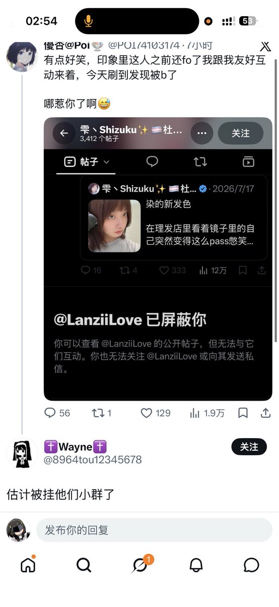
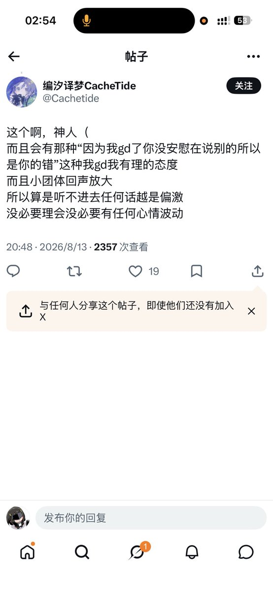
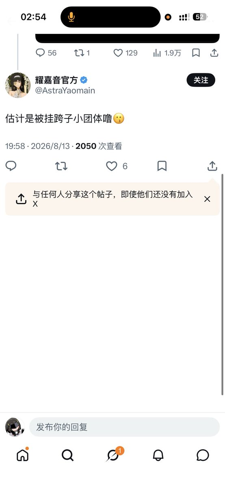
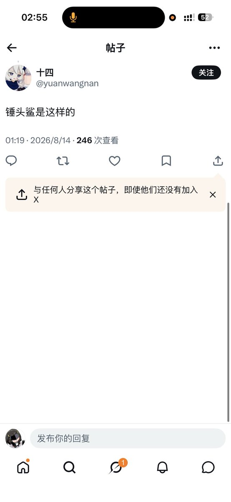

你看看嗷
有说因为我是小粉红的，有说因为我要求别人安慰的，有说因为我小团体的，有说因为我嫉妒它长得好看的，有不知道为啥但就是看不惯我的🥹还有说我用真名当id说我是老东西npd的，那是你爹的化名😆
不是喜欢揣测吗🤔
我只能揣测这几个人嫉妒我家长党嫉妒我手术嫉妒我成绩好学校好嫉妒我有好对象嫉妒我pass嫉妒我粉丝多流量多嘛😆评论区那几个，撒泡尿看看你长啥样呢，不知道的以为多美若天仙啊，到底谁是小团体啊，有多绿茶啊能让你们意淫出这么多东西😆在和顺女比绿茶婊这一块你们确实很pass嗷

有说因为我是小粉红的，有说因为我要求别人安慰的，有说因为我小团体的，有说因为我嫉妒它长得好看的，有不知道为啥但就是看不惯我的🥹还有说我用真名当id说我是老东西npd的，那是你爹的化名😆
不是喜欢揣测吗🤔
我只能揣测这几个人嫉妒我家长党嫉妒我手术嫉妒我成绩好学校好嫉妒我有好对象嫉妒我pass嫉妒我粉丝多流量多嘛😆评论区那几个，撒泡尿看看你长啥样呢，不知道的以为多美若天仙啊，到底谁是小团体啊，有多绿茶啊能让你们意淫出这么多东西😆在和顺女比绿茶婊这一块你们确实很pass嗷




真不知道到底谁才是小团体嗷😅
我fo你跟你主动友好互动就是因为看你人好长得好看，换来一个单取还不让b了，单取只字不提然后就造上谣了。
就一个单取我回b能让你们解读出这么多东西也是牛逼嗷😅
评论区的一条条野狗就开始跟上团了
我都不知道是谁好笑 https://t.co/NG1WHgUkGD
我fo你跟你主动友好互动就是因为看你人好长得好看，换来一个单取还不让b了，单取只字不提然后就造上谣了。
就一个单取我回b能让你们解读出这么多东西也是牛逼嗷😅
评论区的一条条野狗就开始跟上团了
我都不知道是谁好笑 https://t.co/NG1WHgUkGD